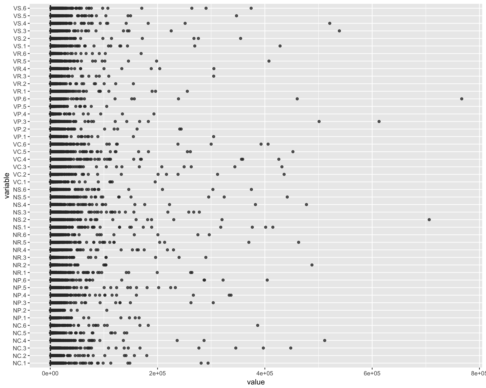
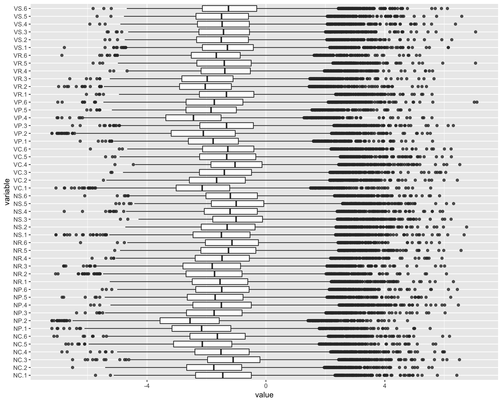
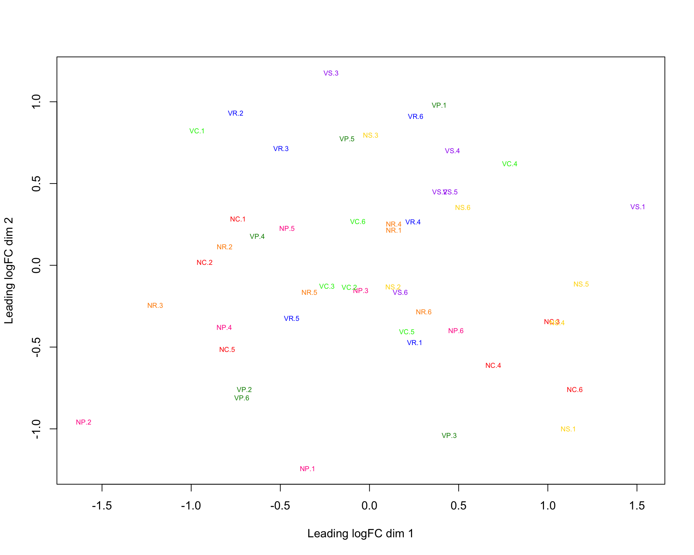
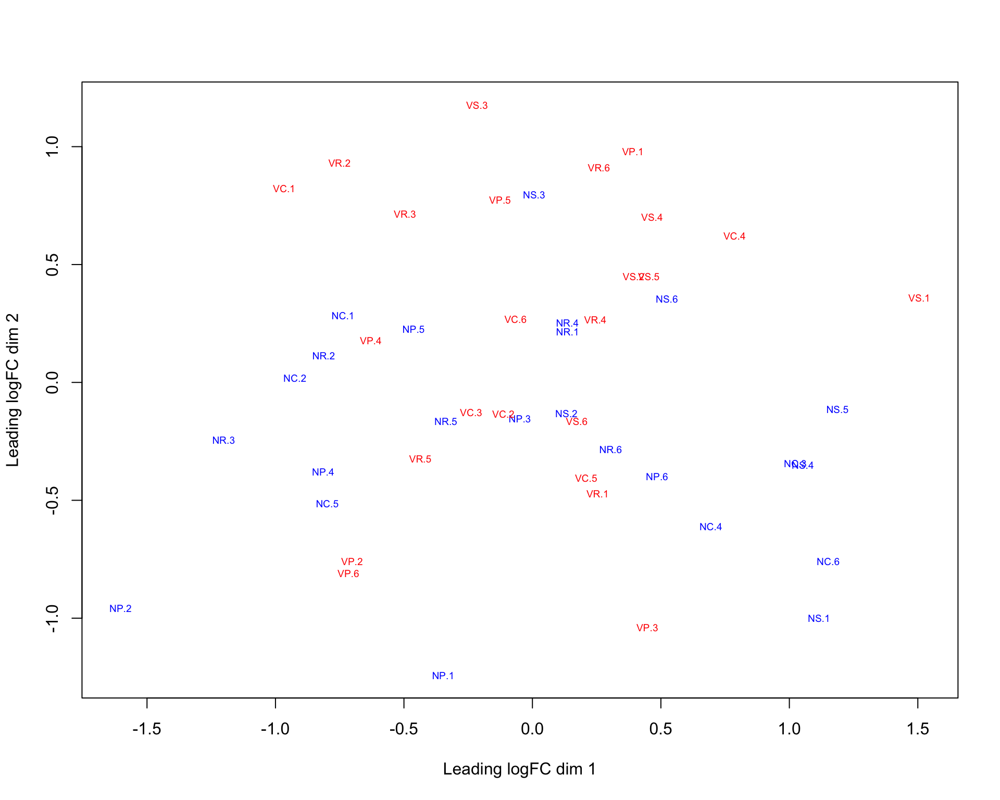
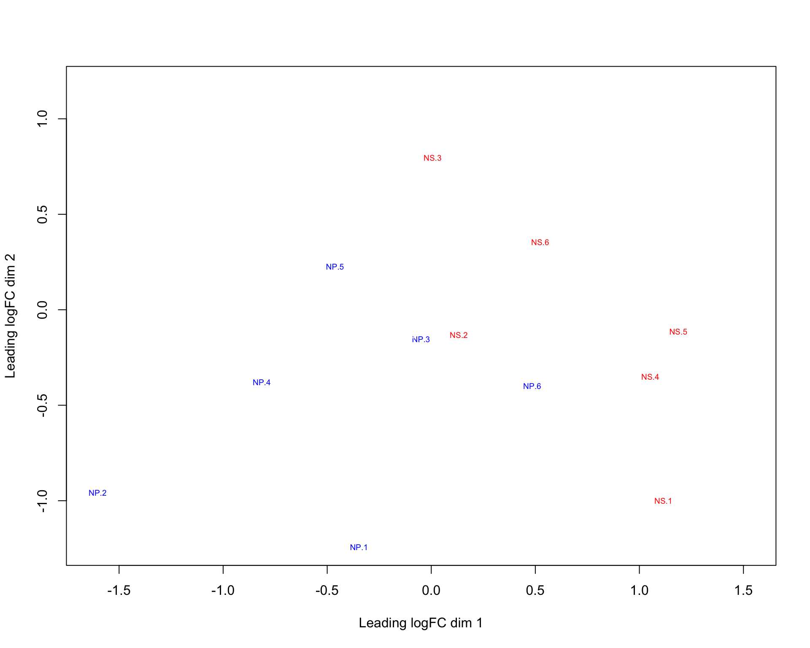
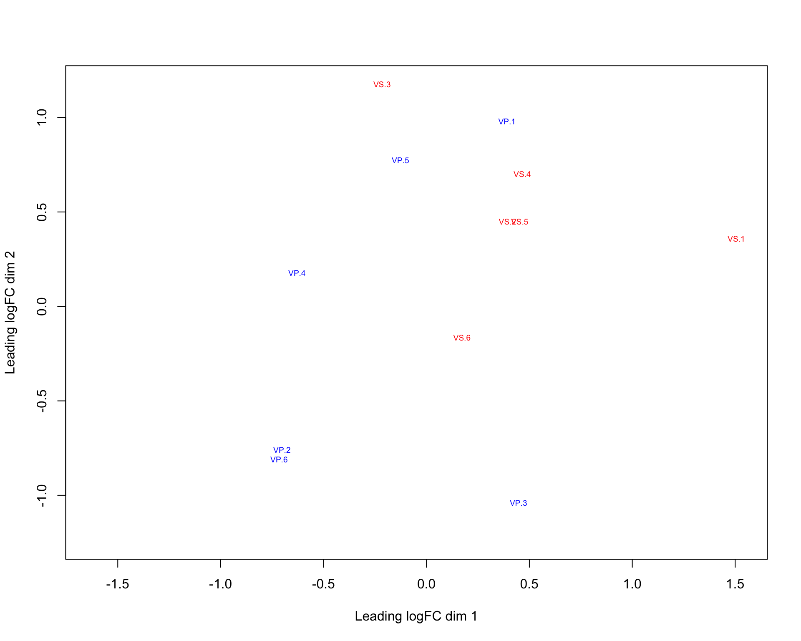
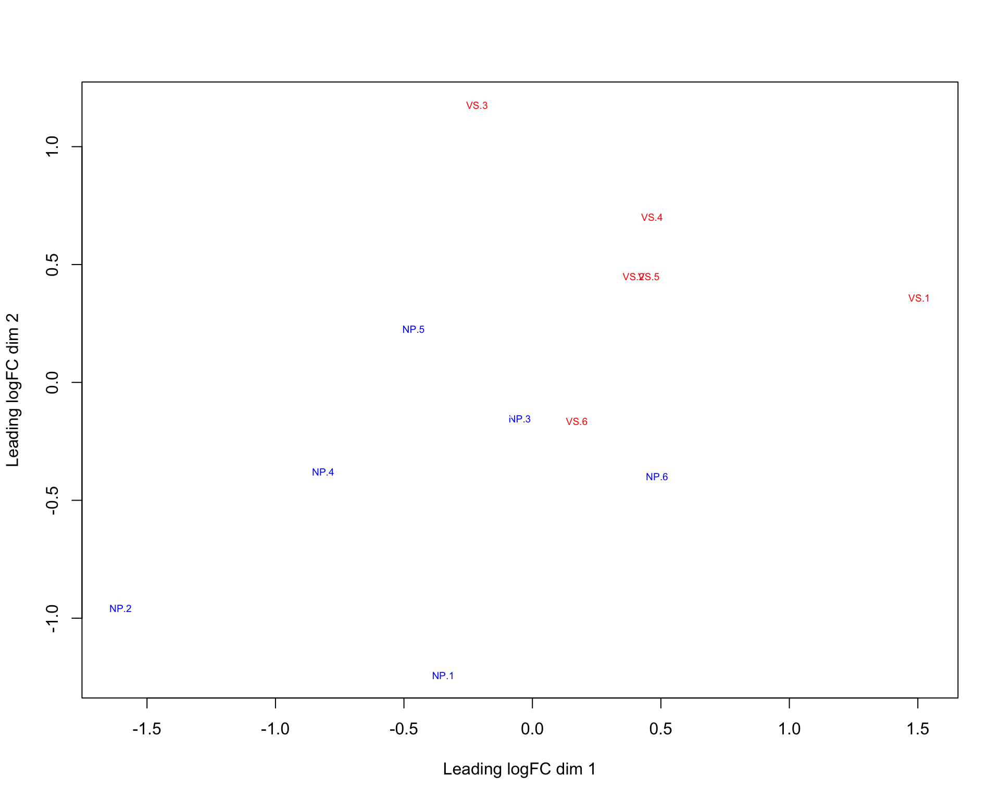
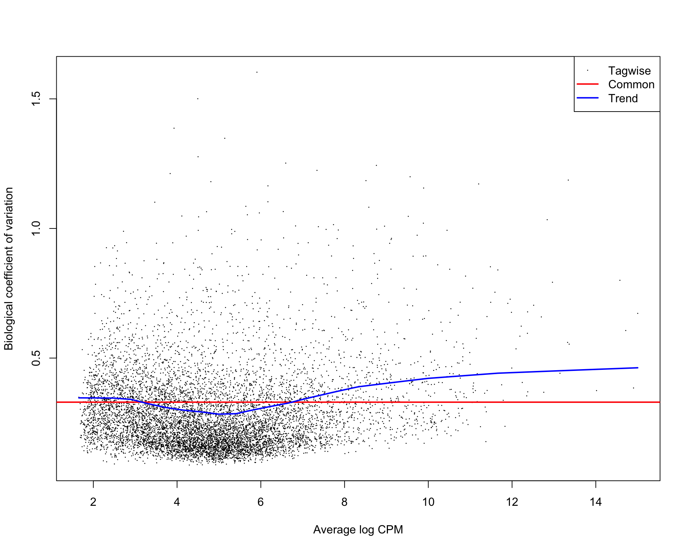

library(edgeR)Loading required package: limmalibrary(ggplot2)
library(GGally)
library(EDASeq)Loading required package: BiobaseLoading required package: BiocGenericsLoading required package: parallel
Attaching package: 'BiocGenerics'The following objects are masked from 'package:parallel':
clusterApply, clusterApplyLB, clusterCall, clusterEvalQ,
clusterExport, clusterMap, parApply, parCapply, parLapply,
parLapplyLB, parRapply, parSapply, parSapplyLBThe following object is masked from 'package:limma':
plotMAThe following objects are masked from 'package:stats':
IQR, mad, sd, var, xtabsThe following objects are masked from 'package:base':
anyDuplicated, append, as.data.frame, cbind, colMeans,
colnames, colSums, do.call, duplicated, eval, evalq, Filter,
Find, get, grep, grepl, intersect, is.unsorted, lapply,
lengths, Map, mapply, match, mget, order, paste, pmax,
pmax.int, pmin, pmin.int, Position, rank, rbind, Reduce,
rowMeans, rownames, rowSums, sapply, setdiff, sort, table,
tapply, union, unique, unsplit, which, which.max, which.minWelcome to Bioconductor
Vignettes contain introductory material; view with
'browseVignettes()'. To cite Bioconductor, see
'citation("Biobase")', and for packages 'citation("pkgname")'.Loading required package: ShortReadLoading required package: BiocParallelLoading required package: BiostringsLoading required package: S4VectorsLoading required package: stats4
Attaching package: 'S4Vectors'The following object is masked from 'package:base':
expand.gridLoading required package: IRangesLoading required package: XVector
Attaching package: 'Biostrings'The following object is masked from 'package:base':
strsplitLoading required package: RsamtoolsLoading required package: GenomeInfoDbLoading required package: GenomicRangesLoading required package: GenomicAlignmentsLoading required package: SummarizedExperimentLoading required package: DelayedArrayLoading required package: matrixStats
Attaching package: 'matrixStats'The following objects are masked from 'package:Biobase':
anyMissing, rowMedians
Attaching package: 'DelayedArray'The following objects are masked from 'package:matrixStats':
colMaxs, colMins, colRanges, rowMaxs, rowMins, rowRangesThe following object is masked from 'package:Biostrings':
typeThe following object is masked from 'package:base':
applylibrary(utils)
thisPath <- "/Users/lindz/BeeVirusDiet/checkPval/Block_Day"
dir.create(paste(thisPath, "/DEGPairs", sep=""))Warning in dir.create(paste(thisPath, "/DEGPairs", sep = "")): '/Users/
lindz/BeeVirusDiet/checkPval/Block_Day/DEGPairs' already existsdir.create(paste(thisPath, "/pvalPlots", sep=""))Warning in dir.create(paste(thisPath, "/pvalPlots", sep = "")): '/Users/
lindz/BeeVirusDiet/checkPval/Block_Day/pvalPlots' already existsbeeCounts <-read.delim(file="../../AllLaneCount.txt",row.names=1,stringsAsFactors = FALSE)
colnames(beeCounts) <- c("NC.1", "NC.2", "NR.1", "VR.1", "NS.1", "VP.1", "NS.2", "VR.2", "NP.1", "VP.2", "VC.1", "NP.2", "VP.3", "NP.3", "VS.1", "VS.2", "VC.2", "NC.3", "VP.4", "NC.4", "NR.2", "VC.3", "VC.4", "NP.4", "VR.3", "NC.5", "VS.3", "NP.5", "VC.5", "VS.4", "NS.3", "VS.5", "VP.5", "NR.3", "NR.4", "VC.6", "NS.4", "NC.6", "NP.6", "VR.4", "NR.5", "NR.6", "NS.5", "VP.6", "NS.6", "VR.5", "VR.6", "VS.6")
beeCounts <- beeCounts[ , order(names(beeCounts))]
y <- DGEList(counts=beeCounts)
exVars <- read.csv("/Users/lindz/bigPint/tblshoot/CheckAllVars/extraVarClean.csv")edgeR vignette states that a gene is required to have a count of 5-10 in a library to be considered expressed in that library. Here minLib is equal to 3.04425910^{6}. A CPM of 3 corresponds to a count of ~9 in the minimum number of samples in a group (24). So, I keep only rows that have that. This reduces the number of genes from 15,314 to 8,581.
minLib <- min(y$samples$lib.size)
keep <- rowSums(cpm(y)>3) >= 24
# Number of genes 15,314--> 8,581
y <- y[keep, , keep.lib.sizes=FALSE]Next, I used edgeR normalization.
y <- calcNormFactors(y)I can create boxplot and RLE boxplot.
ggparcoord(data.frame(y[[1]]), columns=1:48, alphaLines=0, boxplot=TRUE, scale="globalminmax") + coord_flip()
ggparcoord(data.frame(log(y[[1]]/colMeans(y[[1]]))), columns=1:48, alphaLines=0, boxplot=TRUE, scale="globalminmax") + coord_flip()Warning: Removed 56 rows containing non-finite values (stat_boxplot).
I can create MDS plots of interest.
allGroups <- c(rep("NC",6), rep("NP",6), rep("NR",6), rep("NS",6), rep("VC",6), rep("VP",6), rep("VR",6), rep("VS",6))
y$samples$group <- allGroups
plotMDS(y, col = c("red","deeppink","darkorange","gold","green2", "green4","blue", "purple")[factor(allGroups)], cex=0.6)
plotMDS(y, col = c("blue","blue","blue","blue","red","red","red","red")[factor(allGroups)], cex=0.6)
plotMDS(y, col = c("white","blue","white","red","white","white","white","white")[factor(allGroups)], cex=0.6)
plotMDS(y, col = c("white","white","white","white","white","blue","white","red")[factor(allGroups)], cex=0.6)
plotMDS(y, col = c("white","blue","white","white","white","white","white","red")[factor(allGroups)], cex=0.6)
Copying Section (3.4.2 in edgeR vignette)
Group = factor(c(rep("NC",6), rep("NP",6), rep("NR",6), rep("NS",6), rep("VC",6), rep("VP",6), rep("VR",6), rep("VS",6)))
Day = as.factor(exVars$Day)
design <- model.matrix(~0+Group+Day)
colnames(design)[1:8] <- levels(Group)
y <- estimateDisp(y, design)
plotBCV(y)
fit <- glmFit(y, design)
myContrasts <- makeContrasts(
VvsN = (VC+VS+VP+VR)-(NC+NS+NP+NR),
NSvsNP = NS-NP,
VSvsVP = VS-VP,
NPvsVS = NP-VS,
NSNPvVSVP = (NS-NP)-(VS-VP),
levels=design)Below we save the DEGs from all pairwise combinations of treatment groups.
allPairs = data.frame(Treatment1 = factor(), Treatment2 = factor(), NumberDEG = numeric(), FirstLarger = numeric(), SecondLarger = numeric())
for (i in 1:(length(levels(Group))-1)){
for (j in (i+1):length(levels(Group))){
contrast=rep(0,ncol(fit))
contrast[i]=1
contrast[j]=-1
lrt <- glmLRT(fit, contrast=contrast)
lrt <- topTags(lrt, n = nrow(y[[1]]))[[1]]
pVals <- data.frame(x = lrt$PValue)
p <- ggplot(pVals, aes(x=x)) + geom_histogram() + xlab("p-value") + ylab("Gene count") #+ ggtitle(paste0(colnames(fit)[1], " versus ", colnames(fit)[2]))
jpeg(filename = paste0(thisPath, "/pvalPlots/", colnames(fit)[i], "_", colnames(fit)[j],".jpg"))
print(p)
dev.off()
saveRDS(lrt, file=paste0(thisPath, "/DEGPairs/", colnames(fit)[i], colnames(fit)[j],".Rds"))
lrt <- lrt[which(lrt$FDR<0.05),]
lrtLength <- nrow(lrt)
allPairs = rbind(allPairs, data.frame(Treatment1 = factor(colnames(fit)[i]), Treatment2 = factor(colnames(fit)[j]), NumberDEG = lrtLength))
}
}
allPairs <- allPairs[order(allPairs$NumberDEG),]
saveRDS(allPairs, file=paste0(thisPath, "/DEGPairs/allPairs.Rds"))allPairs Treatment1 Treatment2 NumberDEG
1 NC NP 0
3 NC NS 0
4 NC VC 0
19 NS VC 0
22 NS VS 0
25 VC VS 0
7 NC VS 3
26 VP VR 14
11 NP VP 21
5 NC VP 24
23 VC VP 30
17 NR VR 82
8 NP NR 140
27 VP VS 146
16 NR VP 153
24 VC VR 241
28 VR VS 379
12 NP VR 536
6 NC VR 605
10 NP VC 646
15 NR VC 831
2 NC NR 886
20 NS VP 1256
21 NS VR 1600
18 NR VS 2105
13 NP VS 2392
14 NR NS 2745
9 NP NS 2754